Funcionamiento de Scratch¶
Primeros pasos¶
Los pasos para empezar a usar Scratch son:
-
Crear una cuenta en la página web de Scratch.
-
Descargar el programa Scratch.
-
Iniciar sesión en Scratch y comenzar a explorar el entorno de programación.
Bloques¶
Los bloques son los elementos mediante los que se programa en Scratch.Tienen forma de puzzle para encajar unos a continuación de otros, o unos dentro de otros.
Si un bloque no se puede poner en algún lugar en concreto del proyecto, no te dejará hacerlo.
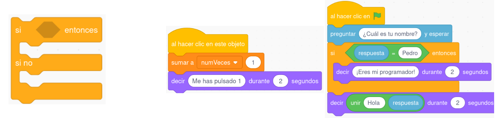
Se programa mediante bloques y cuenta con una interfaz atractiva visualmente, permitiendo al alumnado comenzar a programar desde el primer momento. Se pueden crear historias interactivas, juegos, animaciones, música y producciones artísticas.
Scratch se trabaja como aplicación web, pero también está disponible en formato app con el nombre de “Scratch Junior”. Dicha app permite a los alumnos y alumnas introducirse en la programación desde edades muy tempranas, pudiendo utilizarse desde los 5 años.
Interfaz¶
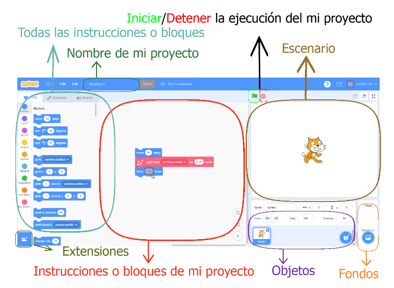
Los objetos:Son los elementos visuales que aparecerán en nuestro proyecto y sobre los que podremos actuar.
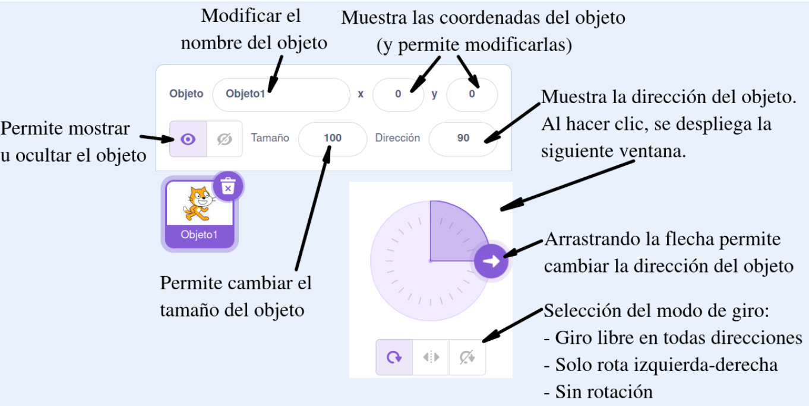
El escenario:Es la zona en la que los objetos trabajarán moviéndose, girando, etc.
-
El centro del escenario es la coordenada (0,0).
-
La coordenada x varía de -240 a 240.
-
La coordenada y varía desde -180 a 180.
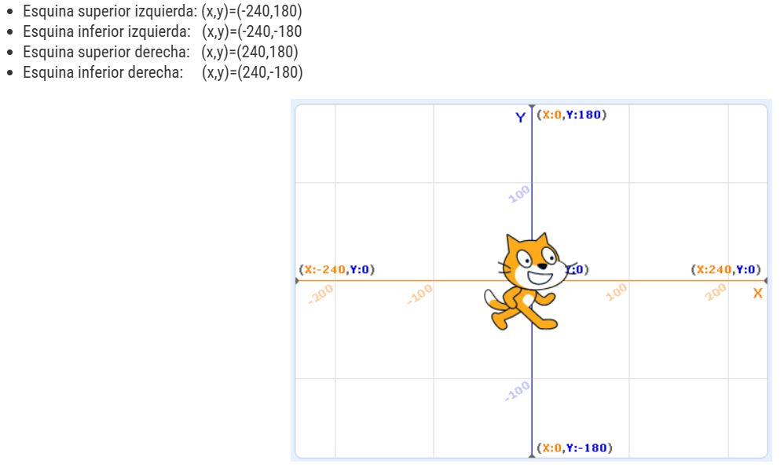
El fondo:Es la imagen o imágenes de fondo del escenario donde irán trabajando nuestros objetos.
Todas las instrucciones:Son todas las posibles instrucciones que podremos usar en nuestro proyecto. Las instrucciones también se denominan bloques.
Las instrucciones de mi proyecto:Son las instrucciones que habremos elegido para que se ejecuten dentro de nuestro proyecto. Las instrucciones de mi proyecto se consiguen arrastrando instrucciones de la zona “todas las instrucciones”.
Extensiones:Botón para añadir extensiones al proyecto.
Creación de un proyecto¶
- Code o código: Se crea el programa para el objeto que tengamos arrastrando los bloques a la zona de "Instrucciones de mi proyecto".
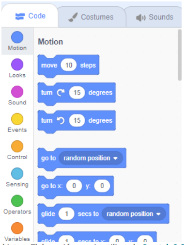
- Costumes o Disfraces: Se pueden modificar los disfraces o vistas del objeto.
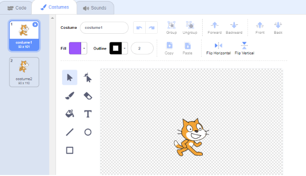
- Sounds o Sonidos: permite modificar los sonidos asociados al objeto.
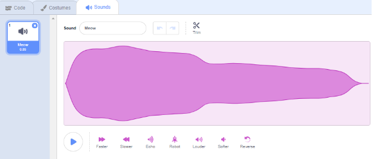
Vídeos de ayuda¶
Ejemplo sencillo paso a paso¶
Cuando inicias Scratch, por defecto te aparece un único objeto que es el gato. Vamos a trabajas con él.
El objetivo es que el gato dibuje un cuadrado.
- Iniciar/detener el programa: los dos botones que están sobre el escenario :
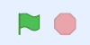
Por lo tanto iniciamos buscando en el código el siguiente bloque:
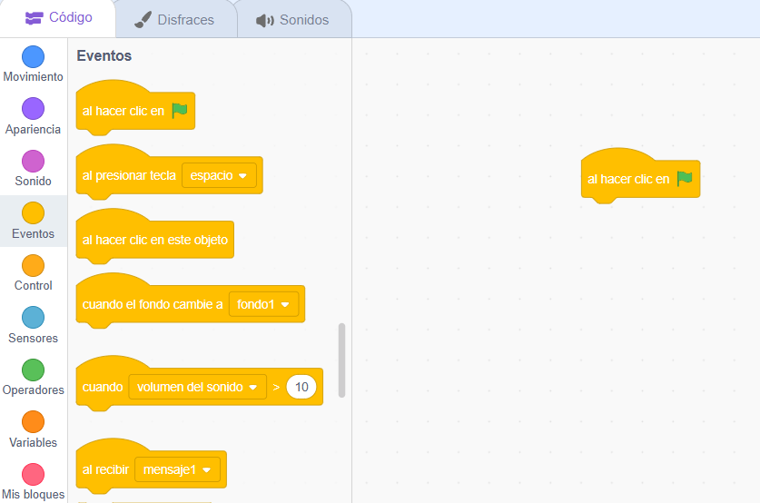
- Añadir extensión: vamos a añadir el lápiz en la barra de código.
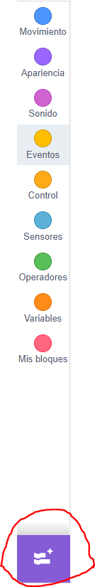 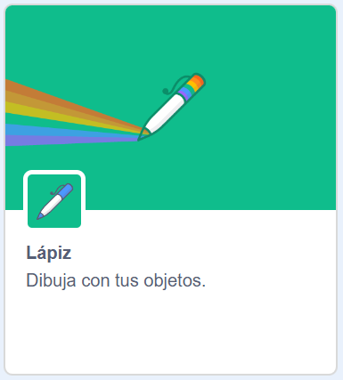
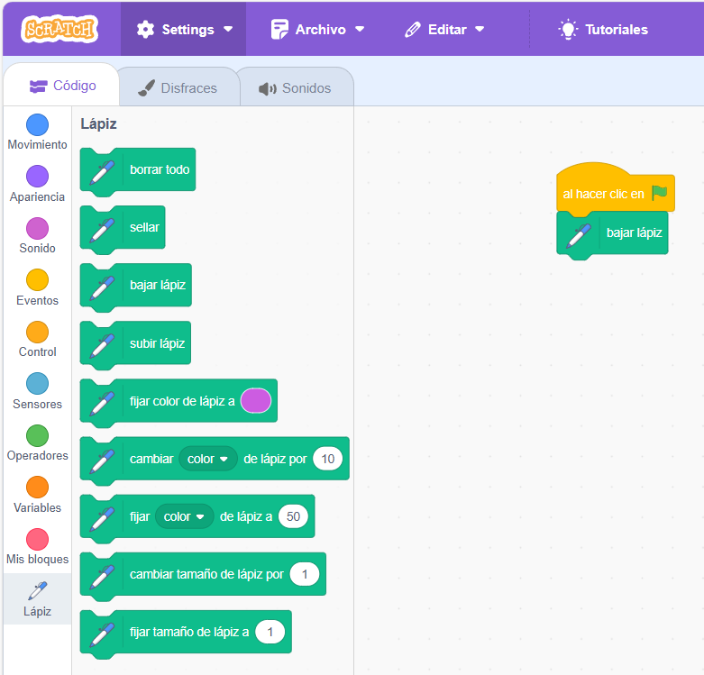
- Movimiento:le damos movimiento al gato y giros para que dibuje el cuadrado.
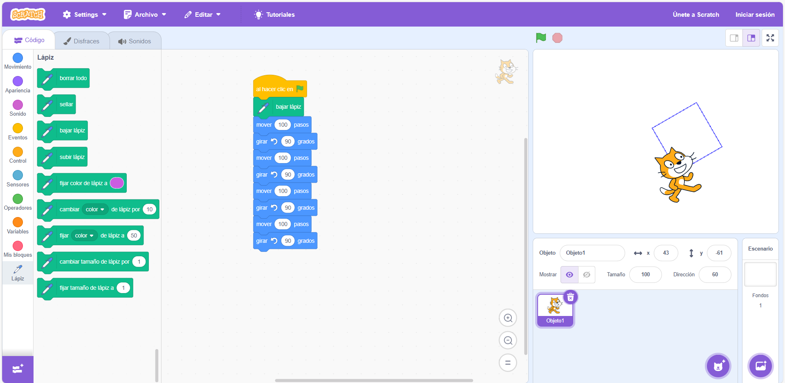
- Mejora del código:
Se repiten los mismos bloques cuatro veces y esta no sería la forma óptima para hacerlo. Existe un bloque en control que es el de repetir donde le puedo indicar el número de veces que quiero repetir un bloque.
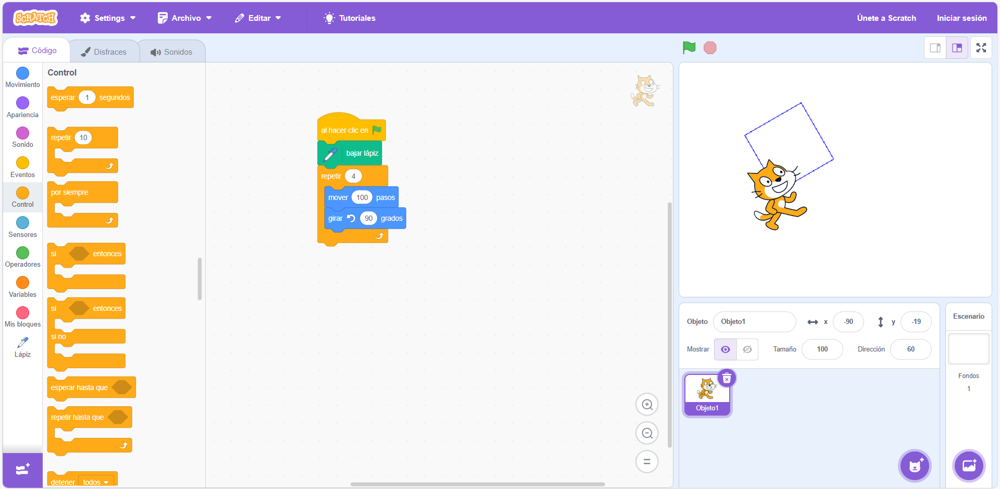
Otra forma de mejorar el código, es que antes de que empiece a dibujar, borre lo que hay dibujado anteriormente.
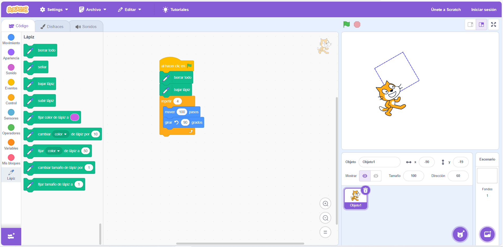
Disfraces y escenarios¶
En la pestaña de disfraces, por defecto nos aparece el gato. Podemos añadir más disfraces desde el botón situado en la parte inferior.
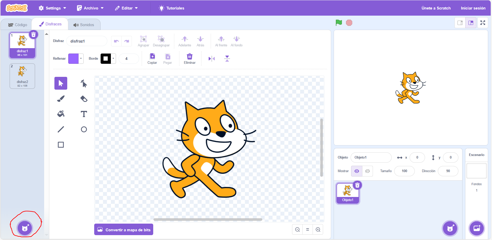
y elegir otro disfraz diferente:
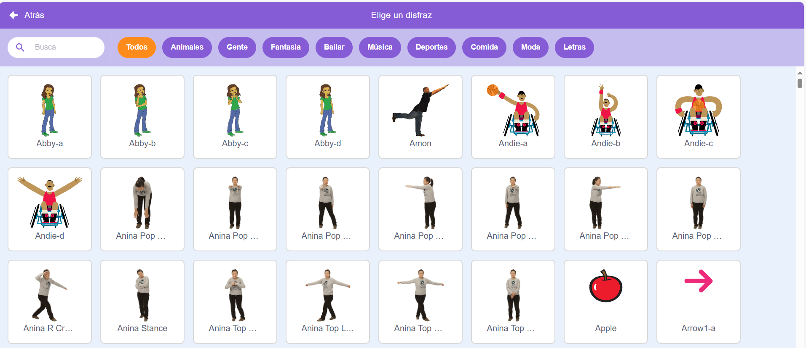
También puedo crear mi propio disfraz:
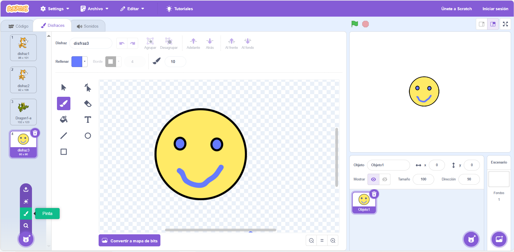
Un ejemplo sencillo:
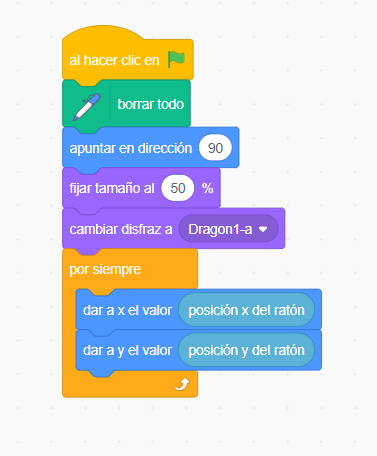
También se puede cambiar el escenario:
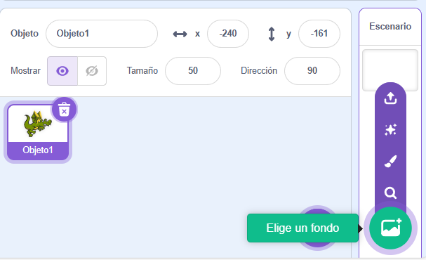
Elegimos dos fondos diferentes y vemos que en el panel de la izquierda ahora nos aparece una solapa con los fondos que tenemos seleccionados:
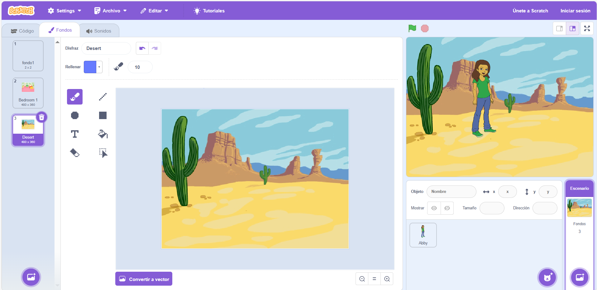
Ahora complementamos el programa siguiente:
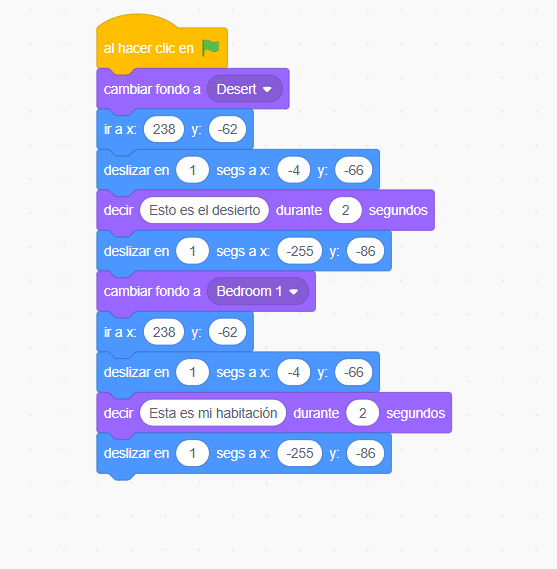
Condiciones
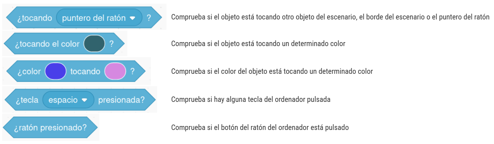
Ejecución concurrente
Se pueden realizar dos programas a la vez sobre el mismo objeto:
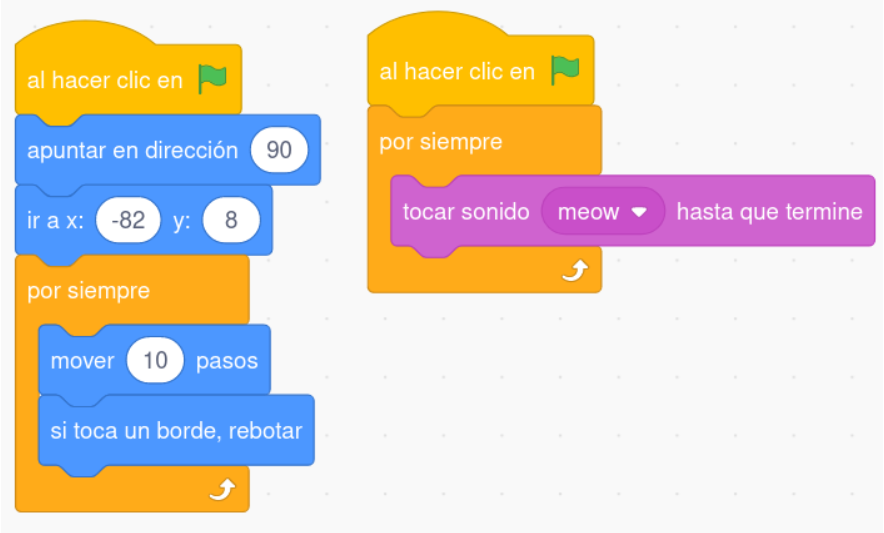